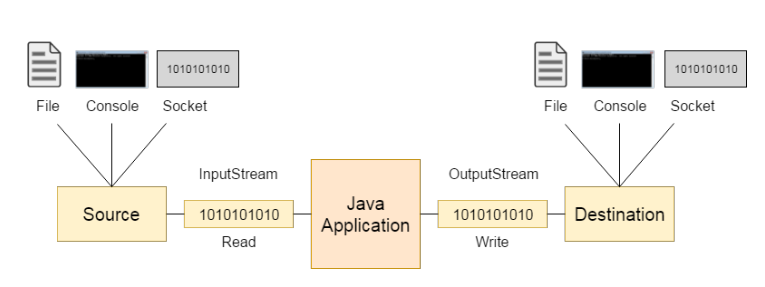
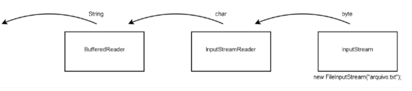
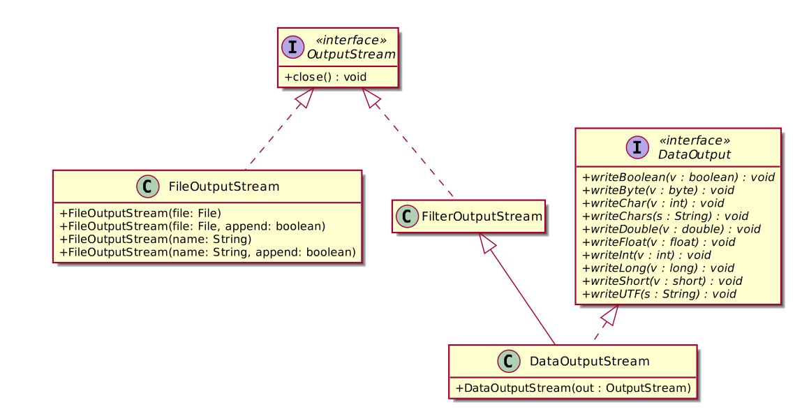
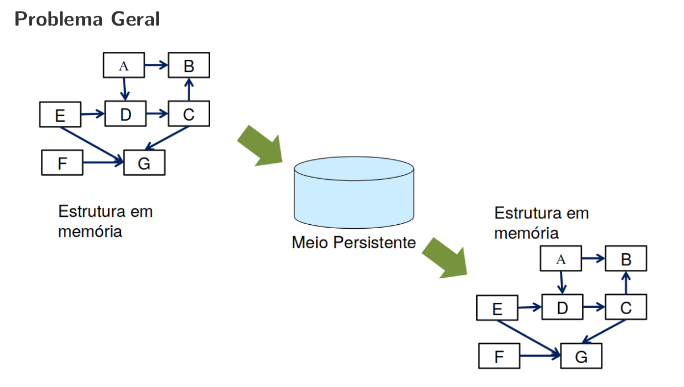
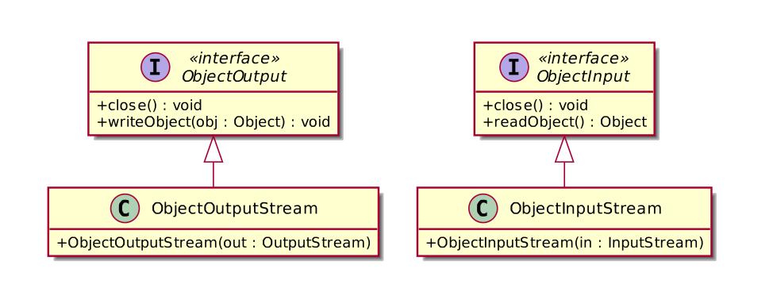

Na linguagem Java, o controle de entrada e saída de dados (conhecido como io) também é orientada a objetos e utiliza vários conceitos de OO como: interfaces, classes abstratas e polimorfismo.
Na linguagem Java, um canal de comunicação chamado de stream (fluxo) é estabelecido entre o dispositivo (teclado, arquivo) e a memória RAM.
Esses canais de comunicação podem ser de entrada ou saída.

As operações sobre os stream de entrada e saída são as mesmas independente de ser um arquivo, uma conexão remota via sockets, console ou campo blob de um banco de dados.
As classes abstratas InputStream e OutputStream definem o comportamento padrão dos fluxos de entrada e saída de bytes.
A classe abstrata InputStream possui várias subclasses conhecidas como AudioInputStream, ByteArrayInputStream, FileInputStream, FilterInputStream, InputStream, ObjectInputStream, PipedInputStream, SequenceInputStream, StringBufferInputStream
A classe abstrada OutputStream possui várias subclasses conhecidas conhecidas como ByteArrayOutputStream, FileOutputStream, FilterOutputStream, ObjectOutputStream, OutputStream, PipedOutputStream
InputStream
import java.io.FileInputStream;
import java.io.InputStream;
class Exemplo1 {
public static void main(String[] args) {
try {
InputStream is = new FileInputStream("hello.txt");
int data;
data = is.read();
int cont = 0;
while (data != -1) {
System.out.println("Char : " + (char) data);
if ((char) data == 'l') {
is.skip(1);
}
if ((char) data == '!') {
cont++;
System.out.println(cont);
if (cont == 1) {
is.mark(0);
} else if (cont == 2) {
if (is.markSupported()) {
System.out.println("reset() chamado");
is.reset();
} else {
System.out.println("reset() nao suportado");
}
}
}
data = is.read();
}
} catch (Exception e) {
e.printStackTrace();
}
}
}OutputStream
import java.io.FileOutputStream;
import java.io.InputStream;
import java.io.OutputStream;
class Exemplo2 {
public static void main(String[] args) {
try {
OutputStream out = new FileOutputStream("hello.out");
String s = "Hello World";
for(int i = 0; i < s.length(); i++){
out.write( s.charAt(i) );
}
out.close();
} catch (Exception e) {
e.printStackTrace();
}
}
}A classe abstrata Reader é utilizada para a leitura de fluxo de caracteres.
Subclasses conhecidas da classe Reader: BufferedReader, CharArrayReader, FilterReader, InputStreamReader, PipedReader, StringReader
Em alguns casos, precisamos de uma ponte para converter um fluxo de bytes em um fluxo de caracteres. O fluxo de bytes pode utilizar diferentes formatos de codificação dos caracteres como:
| Charset | Description |
|---|---|
| US-ASCII | Seven-bit ASCII, a.k.a. ISO646-US, a.k.a. the Basic Latin block of the Unicode character set |
| ISO-8859-1 | ISO Latin Alphabet No. 1, a.k.a. ISO-LATIN-1 |
| UTF-8 | Eight-bit UCS Transformation Format |
| UTF-16BE | Sixteen-bit UCS Transformation Format, big-endian byte order |
| UTF-16LE | Sixteen-bit UCS Transformation Format, little-endian byte order |
| UTF-16 | Sixteen-bit UCS Transformation Format, byte order identified by an optional byte-order mark |
Neste caso, utilizamos a classe InputStreamReader realiza essa ponte entre um stream de bytes e um stream de caracteres codificados.
import java.io.FileInputStream;
import java.io.InputStream;
import java.io.InputStreamReader;
public class Exemplo3 {
public static void main(String[] args) {
try{
InputStream is = new FileInputStream("hello.txt");
InputStreamReader isr = new InputStreamReader(is, StandardCharsets.UTF_8);
int data;
data = isr.read();
while (data != -1) {
System.out.println("Char : " + (char) data);
data = isr.read();
}
}catch(Exception e){
e.printStackTrace();
}
}
}Note que a leitura de uma String seria complicada usando InputStream. A classe BufferedReader resolve esse problema.

import java.io.BufferedReader;
import java.io.InputStream;
import java.io.InputStreamReader;
import java.io.FileInputStream;
public class Exemplo4 {
public static void main(String[] args) {
try{
InputStream is = new FileInputStream("hello.txt");
InputStreamReader isr = new InputStreamReader(is, "UTF-8");
BufferedReader br = new BufferedReader(isr);
System.out.println( br.readLine() );
}catch(Exception e){
e.printStackTrace();
}
}
}A classe Writer é uma classe abstrata para a escrita de fluxo de caracteres.
A classe Writer possui as seguintes subclasses diretas conhecidas: BufferedWriter, CharArrayWriter, FilterWriter, OutputStreamWriter, PipedWriter, PrintWriter, StringWriter
Essa classe é usada para escrever textos em uma fluxo de caracteres de saída.
import java.io.OutputStreamWriter;
import java.io.FileOutputStream;
import java.io.BufferedWriter;
public class Exemplo5 {
public static void main(String[] args) {
try {
OutputStream out = new FileOutputStream("hello.out");
OutputStreamWriter osr = new OutputStreamWriter(out, "UTF-8");
BufferedWriter bw = new BufferedWriter(osr);
bw.write("Hello World!!!");
bw.close();
} catch (Exception e) {
e.printStackTrace();
}
}
}Essa classe utilizada para criar arquivos de textos para gravação de caracteres.
import java.io.FileWriter;
import java.nio.charset.StandardCharsets;
public class Exemplo6 {
public static void main(String[] args) {
try {
FileWriter fstream = new FileWriter("hello.out", StandardCharsets.UTF_8, false);
fstream.write("Hello OutputStream characteres!!!");
fstream.close();
} catch (Exception e) {
e.printStackTrace();
}
}
}Permite a impressão formatada de objetos no fluxo de saída.
import java.io.PrintWriter;
import java.nio.charset.StandardCharsets;
class Student{
String nome;
int matricula;
public Student(String nome, int matricula) {
this.nome = nome;
this.matricula = matricula;
}
@Override
public String toString() {
return "Student [nome=" + nome + ", matricula=" + matricula + "]";
}
}
public class Exemplo7 {
public static void main(String[] args) {
try {
PrintWriter out = new PrintWriter("hello.out", StandardCharsets.UTF_8);
Student s = new Student("joao", 0);
out.println("Hello OutputStream characteres!!!");
out.println(s);
out.close();
} catch (Exception e) {
e.printStackTrace();
}
}
}Permite a escrita e a leitura de tipos de dados primitivos Java de uma maneira portável (em binário).
import java.io.DataInputStream;
import java.io.DataOutputStream;
import java.io.FileInputStream;
import java.io.FileOutputStream;
import java.io.InputStream;
import java.io.OutputStream;
public class Exemplo8 {
public static void main(String[] args) {
try {
OutputStream os = new FileOutputStream("hello.dat");
DataOutputStream out = new DataOutputStream(os);
out.writeInt(45);
out.writeDouble(2.35);
out.close();
InputStream is = new FileInputStream("hello.dat");
DataInputStream in = new DataInputStream(is);
System.out.println( in.readInt() );
System.out.println( in.readDouble() );
in.close();
} catch (Exception e) {
e.printStackTrace();
}
}
}hello.dat
\00\00\00-@\CC\CC\CC\CC\CC\CD
Todas as interfaces implementas: Closeable, AutoCloseable, Iterator<String>
Uma classe que implementa Closeable é uma origem ou destino de dados que pode ser fechado. O método close é invocado para liberar recursos que o objeto está mantendo (como arquivos abertos).
Uma classe que implementa AutoCloseable fecha este recurso, abandonando quaisquer outros recursos subjacentes.
Um analisador de texto simples que pode reconhecer tipos primitivos e strings usando expressões regulares.
Um Scanner divide sua entrada em tokens usando um padrão delimitador, que por padrão corresponde a espaços em branco. Os tokens resultantes podem então ser convertidos em valores de diferentes tipos usando os vários métodos.
Scanner sc = new Scanner(System.in);
int i = sc.nextInt();O scanner também pode usar delimitadores que não sejam espaços em branco. Este exemplo lê vários itens de uma string:
String input = "1 fish 2 fish red fish blue fish";
Scanner s = new Scanner(input).useDelimiter("\\s*fish\\s*");
System.out.println(s.nextInt());
System.out.println(s.nextInt());
System.out.println(s.next());
System.out.println(s.next());
s.close(); Imprimindo
1
2
red
blue O mesmo pode ser feito com o seguinte código:
String input = "1 fish 2 fish red fish blue fish";
Scanner s = new Scanner(input);
s.findInLine("(\\d+) fish (\\d+) fish (\\w+) fish (\\w+)");
MatchResult result = s.match();
for (int i=1; i<=result.groupCount(); i++)
System.out.println(result.group(i));
s.close(); Construtor
public Scanner(InputStream source)Constrói um novo Scanner que produz valores verificados do fluxo de entrada especificado. Os bytes do fluxo são convertidos em caracteres usando o conjunto de caracteres padrão da plataforma subjacente.

ObjectOutputStream: permite a serialização de uma estrutura de objetos num dispositivo de saı́da. Implementa a interface ObjectOutput
ObjectInputStream: permite a desserialização de objetos a partir de dados lidos de um dispositivo de entrada. Implementa a interface ObjectInput

// Classe Car serializável para armazenar carros como objetos
import java.io.Serializable;
public class Car implements Serializable {
private String registration;
private transient String make; // marcado como "transient"
private double price;
public Car(String registration, String make, double price) {
this.registration = registration;
this.make = make;
this.price = price;
}
public String getRegistration() {
return registration;
}
public String getMake() {
return make;
}
public double getPrice() {
return price;
}
@Override
public String toString() {
return String.format("Registration: %s, Make: %s, Price: %.2f",
getRegistration(), getMake(), getPrice());
}
}Main.java
import java.util.ArrayList;
import java.util.List;
import java.util.Locale;
import java.util.Scanner;
import java.io.IOException;
import java.io.ObjectInputStream;
import java.io.ObjectOutputStream;
import java.io.StreamCorruptedException;
import java.io.EOFException;
import java.io.FileInputStream;
import java.io.FileNotFoundException;
import java.io.FileOutputStream;
public class Main {
public static void main(String[] args) {
Locale.setDefault(Locale.US);
Scanner sc = new Scanner(System.in);
char choice;
// create an empty List to hold Cars
List<Car> carList = new ArrayList<>();
// read the list from file when the program starts
readList(carList);
// menu options
do {
System.out.println("\nText File Tester");
System.out.println("1. Add a car");
System.out.println("2. Remove a car");
System.out.println("3. List all cars");
System.out.println("4. Quit");
System.out.print("Entre your choice: ");
choice = sc.next().charAt(0);
switch(choice) {
case '1': addCar(carList); break;
case '2': removeCar(carList); break;
case '3': listAll(carList); break;
case '4': writeList(carList); break; // write to the file
default : System.out.print("\nPlease choose a number from 1-4 only\n");
}
} while(choice != '4');
}
// method to add a new car to the List
static void addCar(List<Car> carListIn) {
String tempReg;
String tempMake;
double tempPrice;
Scanner sc = new Scanner(System.in);
System.out.print("Please enter the registration number: ");
tempReg = sc.next();
System.out.print("Please enter the make: ");
tempMake = sc.next();
System.out.print("Please enter the price: ");
tempPrice = sc.nextDouble();
carListIn.add(new Car(tempReg, tempMake, tempPrice));
}
// method for removing a car from the list
static void removeCar(List<Car> carListIn) {
int pos;
System.out.print("Enter the position of the car to be removed: ");
Scanner sc = new Scanner(System.in);
pos = sc.nextInt();
carListIn.remove(pos-1);
}
// method for listing details of all cars in the list
static void listAll(List<Car> carListIn) {
for(Car item : carListIn) {
System.out.println(item);
}
}
// method for writing the file
static void writeList(List<Car> carListIn) {
// use try-with-resources to ensure file is closed safely
try (
/* create a FileOutputStream object, carFile, that handles
the low-level details of writing the list to a file
which we have called "Cars.ser" */
FileOutputStream carFile = new FileOutputStream("Cars.ser");
// create an ObjectOutputStream object to wrap around carFile
ObjectOutputStream carStream = new ObjectOutputStream(carFile);
)
{
// write each element of the list to the file
for(Car item : carListIn) {
carStream.writeObject(item);
}
}
catch(IOException e) {
System.out.println("There was a problem writing the file");
}
}
// method for reading the file
static void readList(List<Car> carListIn) {
Car tempCar;
boolean endOfFile = false;
// use try-with-resources to ensure file is closed safely
try (
// create a FileInputStream object that handles the low-level
// details of reading the list from the "Cars.ser" file
FileInputStream carFile = new FileInputStream("Cars.ser");
// create an ObjectInputStream object to wrap around carFile
ObjectInputStream carStream = new ObjectInputStream(carFile);
)
{
while(endOfFile == false) {
try {
// read a whole object
tempCar = (Car) carStream.readObject();
carListIn.add(tempCar);
}
catch(EOFException e) {
// use the fact that readObject throws an EOFException
// to check whether the end of the filehas been reached
endOfFile = true;
}
}
}
catch(FileNotFoundException e) {
System.out.println("\nNo previous file was read");
}
catch(ClassNotFoundException e) { // thrown by readObject
System.out.println("\nTrying to read an object of an unknown class");
}
catch(StreamCorruptedException e) { // thrown by the constructor ObjectInputStream
System.out.println("\nUnreadable file format");
}
catch(IOException e) {
System.out.println("\nerror: There was a problem reading the file");
}
}
}wladimir@wladimir-Nitro:~/Disciplinas/2022.2/Programação Orientação a Objetos/re
positorio/Semana17$ java Main
No previous file was read
Text File Tester
1. Add a car
2. Remove a car
3. List all cars
4. Quit
Entre your choice: 1
Please enter the registration number: 1
Please enter the make: Corsa
Please enter the price: 1000
Text File Tester
1. Add a car
2. Remove a car
3. List all cars
4. Quit
Entre your choice: 3
Registration: 1, Make: Corsa, Price: 1000.00
Text File Tester
1. Add a car
2. Remove a car
3. List all cars
4. Quit
Entre your choice: 4
wladimir@wladimir-Nitro:~/Disciplinas/2022.2/Programação Orientação a Objetos/re
positorio/Semana17$ java Main
Text File Tester
1. Add a car
2. Remove a car
3. List all cars
4. Quit
Entre your choice: 3
Registration: 1, Make: null, Price: 1000.00
Text File Tester
1. Add a car
2. Remove a car
3. List all cars
4. Quit
Entre your choice: 1
Please enter the registration number: 2
Please enter the make: fiat
Please enter the price: 50000
Text File Tester
1. Add a car
2. Remove a car
3. List all cars
4. Quit
Entre your choice: 3
Registration: 1, Make: null, Price: 1000.00
Registration: 2, Make: fiat, Price: 50000.00
Text File Tester
1. Add a car
2. Remove a car
3. List all cars
4. Quit
Entre your choice: 4